This chapter introduces graphs. First, I’ll talk about what graphs are (they don’t involve an X or Y axis). Then I’ll show you your first graph algorithm. It’s called breadth-first search (BFS).
Breadth-first search allows you to find the shortest distance between two things. But shortest distance can mean a lot of things! You can use breadth-first search to
Graph algorithms are some of the most useful algorithms I know. Make sure you read the next few chapters carefully—these are algorithms you’ll be able to apply again and again.
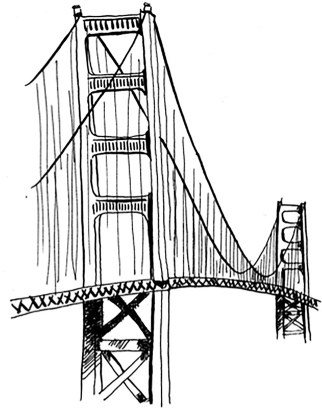
Suppose you’re in San Francisco, and you want to go from Twin Peaks to the Golden Gate Bridge. You want to get there by bus, with the minimum number of transfers. Here are your options.
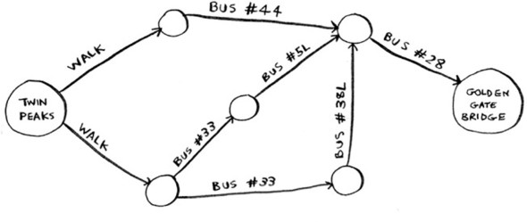
What’s your algorithm to find the path with the fewest steps?
Well, can you get there in one step? Here are all the places you can get to in one step.
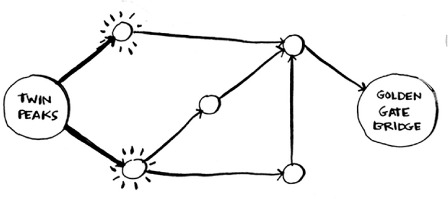
The bridge isn’t highlighted; you can’t get there in one step. Can you get there in two steps?
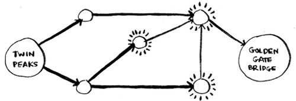
Again, the bridge isn’t there, so you can’t get to the bridge in two steps. What about three steps?
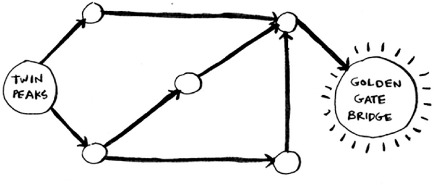
Aha! Now the Golden Gate Bridge shows up. So it takes three steps to get from Twin Peaks to the bridge using this route.
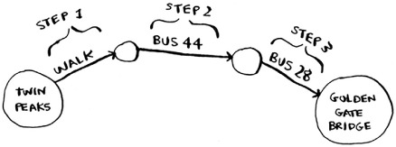
There are other routes that will get you to the bridge too, but they’re longer (four steps). The algorithm found that the shortest route to the bridge is three steps long. This type of problem is called a shortest-path problem. You’re always trying to find the shortest something. It could be the shortest route to your friend’s house. It could be the smallest number of moves to checkmate in a game of chess. The algorithm to solve a shortest-path problem is called breadth-first search.
To figure out how to get from Twin Peaks to the Golden Gate Bridge, there are two steps:
1. Model the problem as a graph.
2. Solve the problem using breadth-first search.
Next I’ll cover what graphs are. Then I’ll go into breadth-first search in more detail.
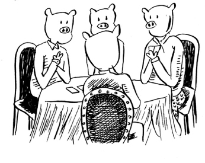
A graph models a set of connections. For example, suppose you and your friends are playing poker, and you want to model who owes whom money. Here’s how you could say, “Alex owes Rama money.”
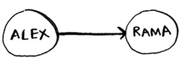
The full graph could look something like this.
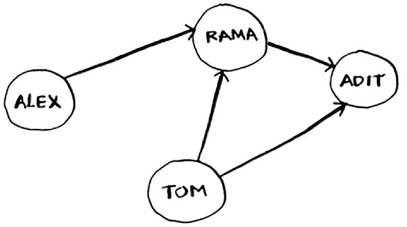
Graph of people who owe other people poker money
Alex owes Rama money, Tom owes Adit money, and so on. Each graph is made up of nodes and edges.
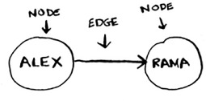
That’s all there is to it! Graphs are made up of nodes and edges. A node can be directly connected to many other nodes. Those nodes are called its neighbors. In this graph, Rama is Alex’s neighbor. Adit isn’t Alex’s neighbor, because they aren’t directly connected. But Adit is Rama’s and Tom’s neighbor.
Graphs are a way to model how different things are connected to one another. Now let’s see breadth-first search in action.
We looked at a search algorithm in chapter 1: binary search. Breadth-first search is a different kind of search algorithm: one that runs on graphs. It can help answer two types of questions:
You already saw breadth-first search once, when you calculated the shortest route from Twin Peaks to the Golden Gate Bridge. That was a question of type 2: “What is the shortest path?” Now let’s look at the algorithm in more detail. You’ll ask a question of type 1: “Is there a path?”
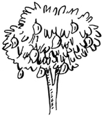
Suppose you’re the proud owner of a mango farm. You’re looking for a mango seller who can sell your mangoes. Are you connected to a mango seller on Facebook? Well, you can search through your friends.
This search is pretty straightforward. First, make a list of friends to search.
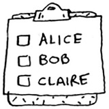
Now, go to each person in the list and check whether that person sells mangoes.
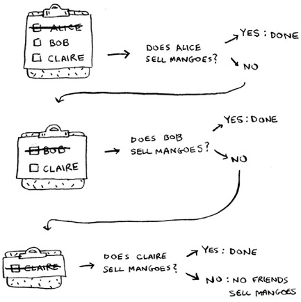
Suppose none of your friends are mango sellers. Now you have to search through your friends’ friends.
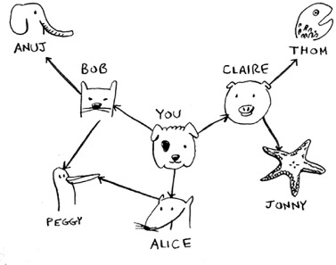
Each time you search for someone from the list, add all of their friends to the list.
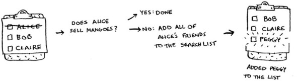
This way, you not only search your friends, but you search their friends, too. Remember, the goal is to find one mango seller in your network. So if Alice isn’t a mango seller, you add her friends to the list, too. That means you’ll eventually search her friends—and then their friends, and so on. With this algorithm, you’ll search your entire network until you come across a mango seller. This algorithm is breadth-first search.
As a recap, these are the two questions that breadth-first search can answer for you:
You saw how to answer question 1; now let’s try to answer question 2. Can you find the closest mango seller? For example, your friends are first-degree connections, and their friends are second-degree connections.
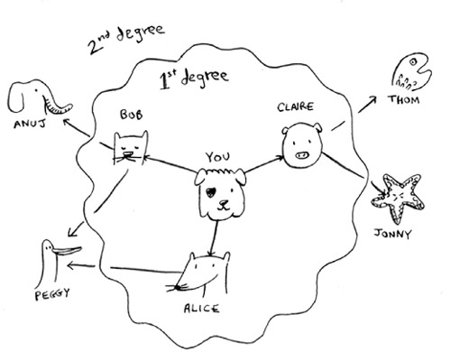
You’d prefer a first-degree connection to a second-degree connection, and a second-degree connection to a third-degree connection, and so on. So you shouldn’t search any second-degree connections before you make sure you don’t have a first-degree connection who is a mango seller. Well, breadth-first search already does this! The way breadth-first search works, the search radiates out from the starting point. So you’ll check first-degree connections before second-degree connections. Pop quiz: who will be checked first, Claire or Anuj? Answer: Claire is a first-degree connection, and Anuj is a second-degree connection. So Claire will be checked before Anuj.
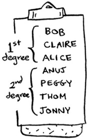
Another way to see this is, first-degree connections are added to the search list before second-degree connections.
You just go down the list and check people to see whether each one is a mango seller. The first-degree connections will be searched before the second-degree connections, so you’ll find the mango seller closest to you. Breadth-first search not only finds a path from A to B, it also finds the shortest path.
Notice that this only works if you search people in the same order in which they’re added. That is, if Claire was added to the list before Anuj, Claire needs to be searched before Anuj. What happens if you search Anuj before Claire, and they’re both mango sellers? Well, Anuj is a second-degree contact, and Claire is a first-degree contact. You end up with a mango seller who isn’t the closest to you in your network. So you need to search people in the order that they’re added. There’s a data structure for this: it’s called a queue.
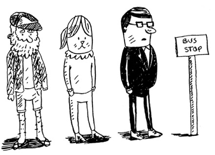
A queue works exactly like it does in real life. Suppose you and your friend are queueing up at the bus stop. If you’re before him in the queue, you get on the bus first. A queue works the same way. Queues are similar to stacks. You can’t access random elements in the queue. Instead, there are two only operations, enqueue and dequeue.
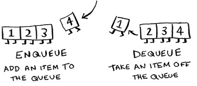
If you enqueue two items to the list, the first item you added will be dequeued before the second item. You can use this for your search list! People who are added to the list first will be dequeued and searched first.
The queue is called a FIFO data structure: First In, First Out. In contrast, a stack is a LIFO data structure: Last In, First Out.
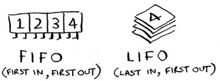
Now that you know how a queue works, let’s implement breadth-first search!
Run the breadth-first search algorithm on each of these graphs to find the solution.
Find the length of the shortest path from start to finish.
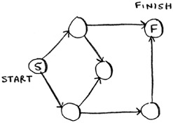
Find the length of the shortest path from “cab” to “bat”.
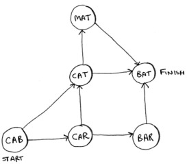
First, you need to implement the graph in code. A graph consists of several nodes.
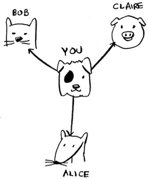
And each node is connected to neighboring nodes. How do you express a relationship like “you -> bob”? Luckily, you know a data structure that lets you express relationships: a hash table!
Remember, a hash table allows you to map a key to a value. In this case, you want to map a node to all of its neighbors.
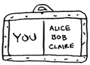
Here’s how you’d write it in Python:
graph = {}
graph["you"] = ["alice", "bob", "claire"]
Notice that “you” is mapped to an array. So graph["you"] will give you an array of all the neighbors of “you”.
A graph is just a bunch of nodes and edges, so this is all you need to have a graph in Python. What about a bigger graph, like this one?
graph = {}
graph["you"] = ["alice", "bob", "claire"]
graph["bob"] = ["anuj", "peggy"]
graph["alice"] = ["peggy"]
graph["claire"] = ["thom", "jonny"]
graph["anuj"] = []
graph["peggy"] = []
graph["thom"] = []
graph["jonny"] = []
Pop quiz: does it matter what order you add the key/value pairs in? Does it matter if you write
graph["claire"] = ["thom", "jonny"] graph["anuj"] = []
instead of
graph["anuj"] = [] graph["claire"] = ["thom", "jonny"]
Think back to the previous chapter. Answer: It doesn’t matter. Hash tables have no ordering, so it doesn’t matter what order you add key/value pairs in.
Anuj, Peggy, Thom, and Jonny don’t have any neighbors. They have arrows pointing to them, but no arrows from them to someone else. This is called a directed graph—the relationship is only one way. So Anuj is Bob’s neighbor, but Bob isn’t Anuj’s neighbor. An undirected graph doesn’t have any arrows, and both nodes are each other’s neighbors. For example, both of these graphs are equal.
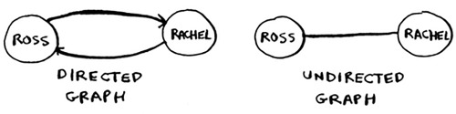
To recap, here’s how the implementation will work.
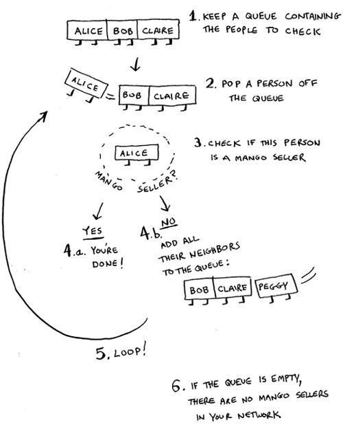
When updating queues, I use the terms enqueue and dequeue. You’ll also encounter the terms push and pop. Push is almost always the same thing as enqueue, and pop is almost always the same thing as dequeue.
Make a queue to start. In Python, you use the double-ended queue (deque) function for this:
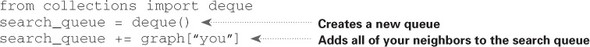
Remember, graph["you"] will give you a list of all your neighbors, like ["alice", "bob", "claire"]. Those all get added to the search queue.
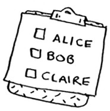
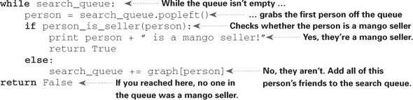
One final thing: you still need a person_is_seller function to tell you when someone is a mango seller. Here’s one:
def person_is_seller(name):
return name[-1] == 'm'
This function checks whether the person’s name ends with the letter m. If it does, they’re a mango seller. Kind of a silly way to do it, but it’ll do for this example. Now let’s see the breadth-first search in action.
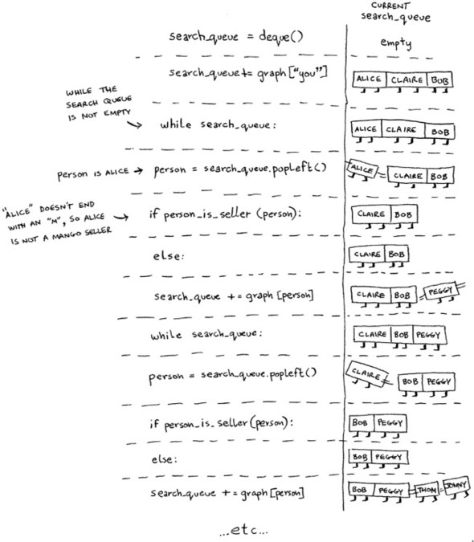
And so on. The algorithm will keep going until either
Alice and Bob share a friend: Peggy. So Peggy will be added to the queue twice: once when you add Alice’s friends, and again when you add Bob’s friends. You’ll end up with two Peggys in the search queue.
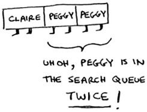
But you only need to check Peggy once to see whether she’s a mango seller. If you check her twice, you’re doing unnecessary, extra work. So once you search a person, you should mark that person as searched and not search them again.
If you don’t do this, you could also end up in an infinite loop. Suppose the mango seller graph looked like this.
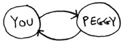
To start, the search queue contains all of your neighbors.
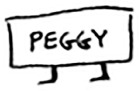
Now you check Peggy. She isn’t a mango seller, so you add all of her neighbors to the search queue.
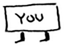
Next, you check yourself. You’re not a mango seller, so you add all of your neighbors to the search queue.
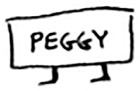
And so on. This will be an infinite loop, because the search queue will keep going from you to Peggy.
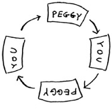
Before checking a person, it’s important to make sure they haven’t been checked already. To do that, you’ll keep a list of people you’ve already checked.
Here’s the final code for breadth-first search, taking that into account:
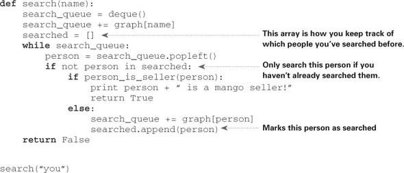
Try running this code yourself. Maybe try changing the person_is_seller function to something more meaningful, and see if it prints what you expect.
If you search your entire network for a mango seller, that means you’ll follow each edge (remember, an edge is the arrow or connection from one person to another). So the running time is at least O(number of edges).
You also keep a queue of every person to search. Adding one person to the queue takes constant time: O(1). Doing this for every person will take O(number of people) total. Breadth-first search takes O(number of people + number of edges), and it’s more commonly written as O(V+E) (V for number of vertices, E for number of edges).
Here’s a small graph of my morning routine.
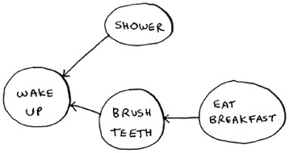
It tells you that I can’t eat breakfast until I’ve brushed my teeth. So “eat breakfast” depends on “brush teeth”.
On the other hand, showering doesn’t depend on brushing my teeth, because I can shower before I brush my teeth. From this graph, you can make a list of the order in which I need to do my morning routine:
Note that “shower” can be moved around, so this list is also valid:
For these three lists, mark whether each one is valid or invalid.
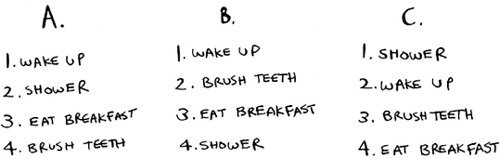
Here’s a larger graph. Make a valid list for this graph.
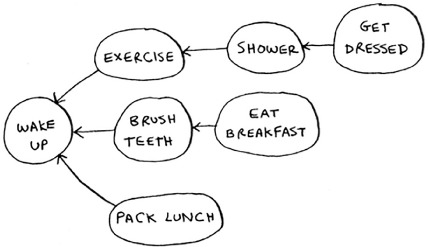
You could say that this list is sorted, in a way. If task A depends on task B, task A shows up later in the list. This is called a topological sort, and it’s a way to make an ordered list out of a graph. Suppose you’re planning a wedding and have a large graph full of tasks to do—and you’re not sure where to start. You could topologically sort the graph and get a list of tasks to do, in order.
Suppose you have a family tree.
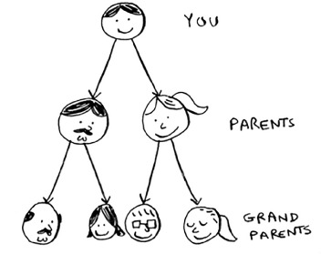
This is a graph, because you have nodes (the people) and edges. The edges point to the nodes’ parents. But all the edges go down—it wouldn’t make sense for a family tree to have an edge pointing back up! That would be meaningless—your dad can’t be your grandfather’s dad!
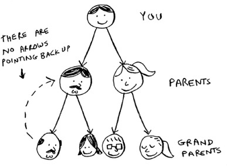
This is called a tree. A tree is a special type of graph, where no edges ever point back.
Which of the following graphs are also trees?
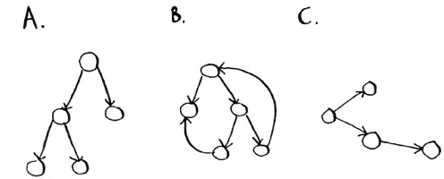
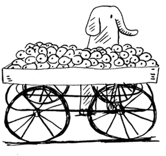